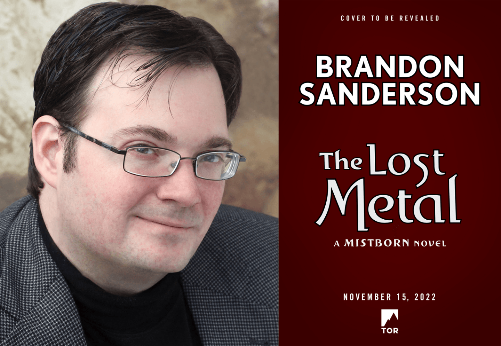
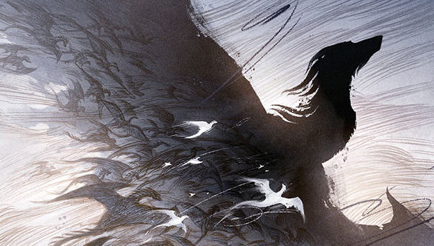

We’re thrilled to announce The Lost Metal: A MISTBORN Novel by Brandon Sanderson—publishing November 15, 2022 with Tor Books. Return to #1 New York Times bestseller Brandon Sanderson’s Mistborn world of Scadrial as its second era, which began with The Alloy of Law, comes to its earth-shattering conclusion in The Lost Metal. Brandon Sanderson grew up in Lincoln, Nebraska. He lives in Utah with his wife and children and teaches creative writing at Brigham Young University. He is the author of such bestsellers as the Mistborn trilogy and its sequels, The Alloy of Law, Shadows of Self, and The Bands of Mourning; the Stormlight Archive novels The Way of Kings and Words of Radiance; and other novels, including The Rithmatist and Steelheart. He won a Hugo Award for Best Novella for The Emperor’s Soul, set in the world of his acclaimed first novel, Elantris. Additionally, he was chosen to complete Robert Jordan’s Wheel of Time sequence
Published: 02/01/2022
Who doesn’t love dragons? From ancient legends to modern epics, these massive beasts are a foundational part of fantasy lore—and today, we’re pleased to share with you news of an exciting dragon-centric short fiction anthology that will celebrate every aspect of these great and terrible beasts. The Book of Dragons, coming from Harper Voyager in summer 2020, is a massive tome filled with all-new stories from both seasoned fantasy veterans and up-and-coming talents, all riffing on dragon legends and lore. Even better, each poem or story will be accompanied by gorgeous new artwork from World Fantasy Award-winning artist Rovina Cai. Below, we reveal the cover of the anthology, featuring wraparound art by Rovina Cai, and share details on how the book came to be, straight from the creative team assembling it.
Published: 29/12/2021